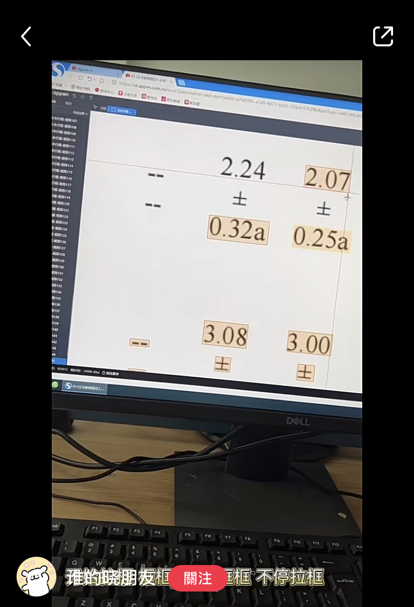
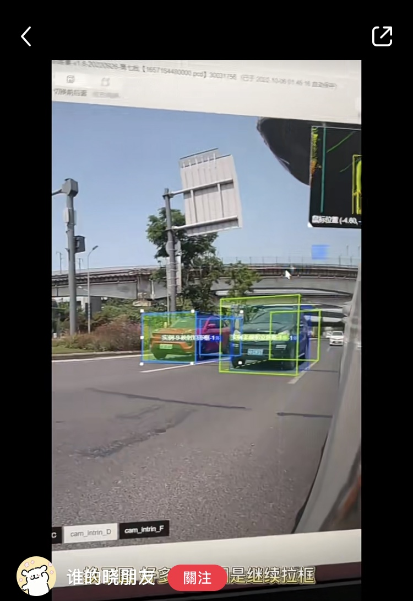
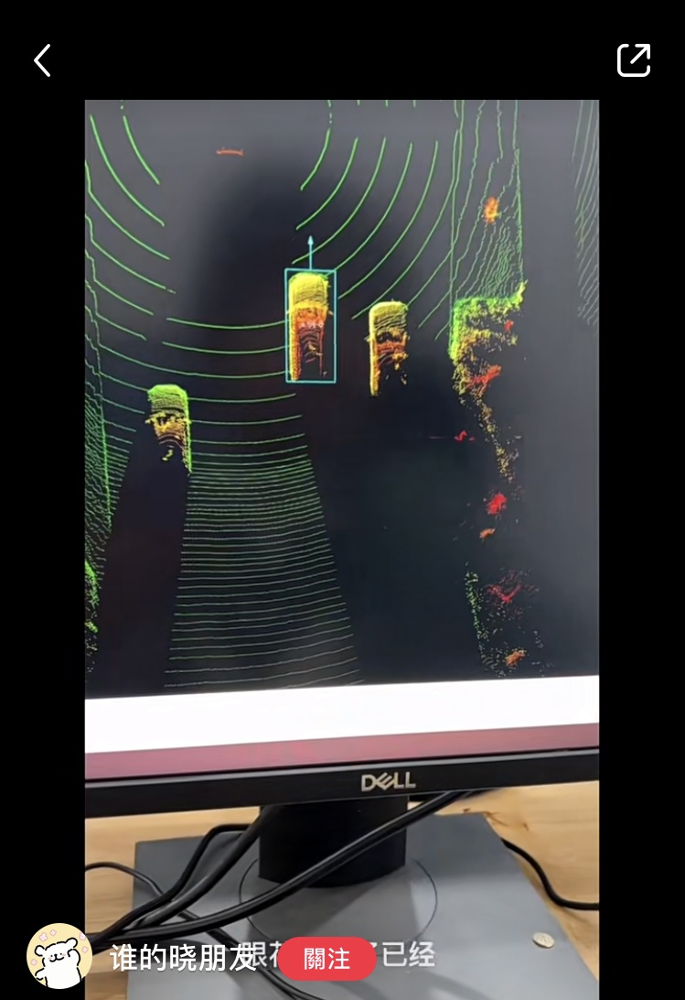
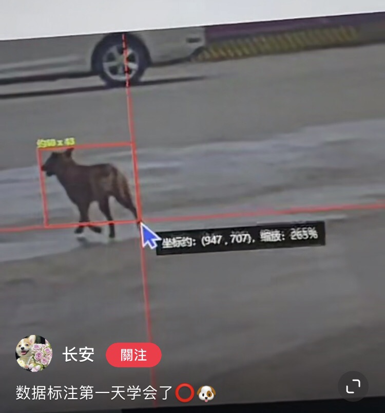
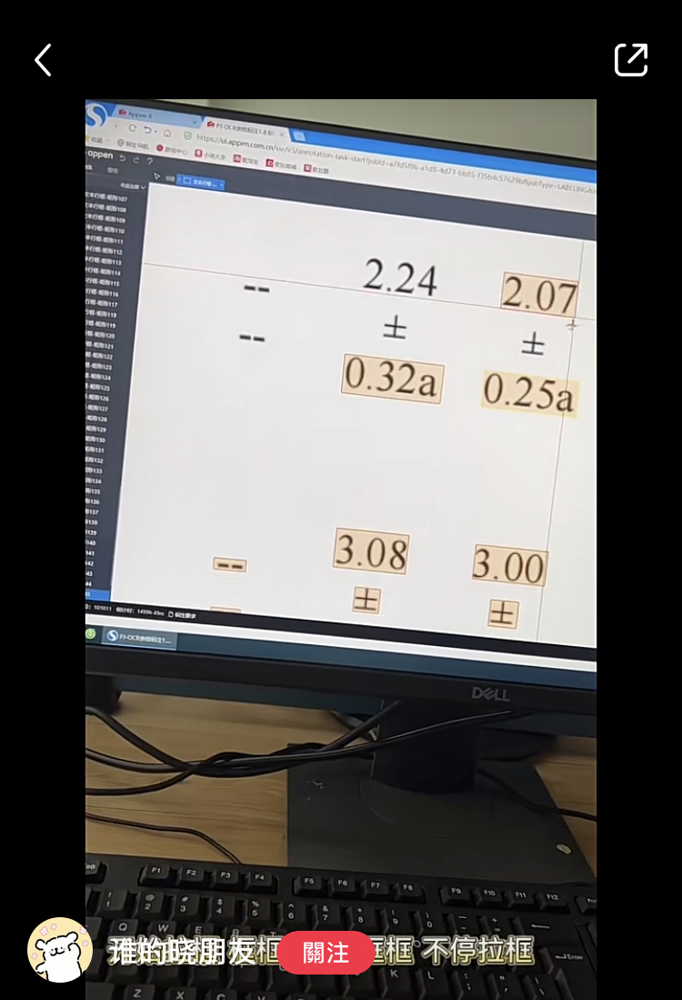
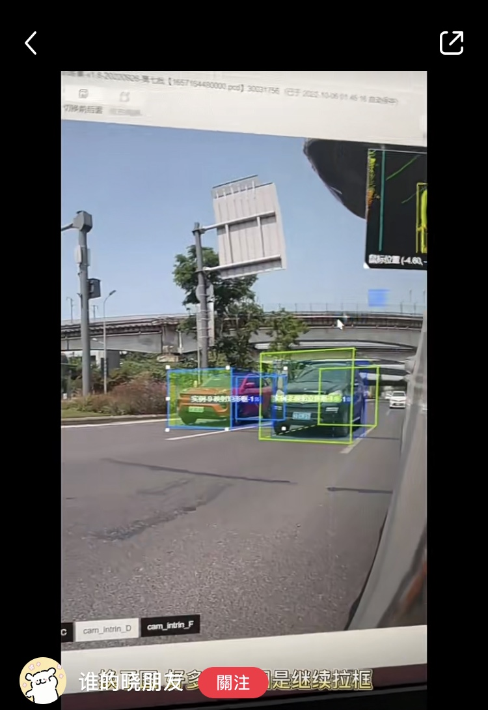
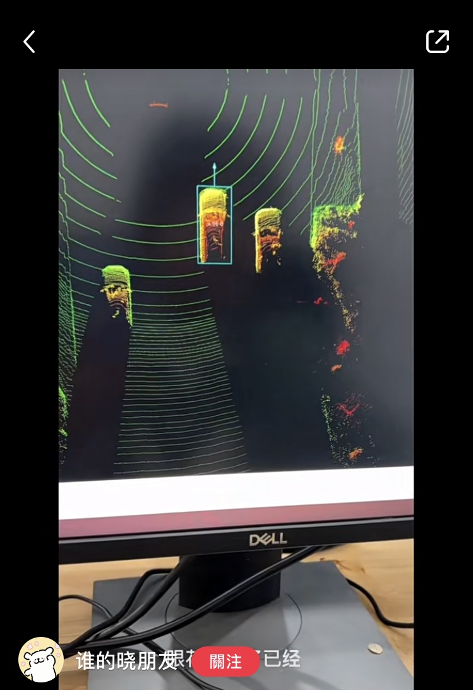
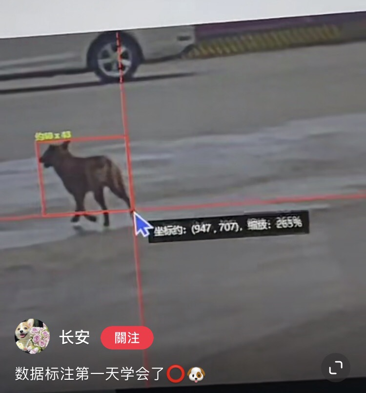

The most frequent letter combinations in my timeline these days are definitely GPT(Generative Pre-trained Transformer) and LLM (Large Language Model), and the whole world is falling into this generative AI hype, so I guess no one will mind if I come up with another abbreviation—IML, In Machine Learning. Machine learning (ML) seems to have created a parallel universe where we have unlimited knowledge and creativity, but at the same time, how do we face this false certainty in ML models, where LLMs confidently make up answers based on statistical modeling, where generative diffusion models are convinced that the person with disability is a suitcases1 because there is too little training data on disabled people, and in the safety-critical field, where the deep neutral networks overconfidently controlled the car toward a pedestrian even when it was “baffled”? Or let’s ask, where is this (un) certainty from? and what is it built upon? With this essay, I want to discuss how the (un)certainty IML models is built on the uncertainty IRL by looking at the data, models, infrastructure, economic interests and pow- er relations. In Real Life, it is not the “real life” we talk about when we talk about memes and poverty porns, but real catastrophes, real power acts on deciding what is dirty data, real “flexible” labor, real desire for stability, real global data supply chains, real power play of who has the right to drawing a map for machine learning.
In deep neutral networks, along with the prediction model, there is an additional model — the prediction’s uncertainty model. This model is used to estimate the uncertainty of a given prediction, but interestingly, one of the sources of uncertainty is how this estimation model is implemented. In other words, the uncertainty in the model used to estimate the uncertainty creates noise in the estimated uncertainty. In this seemingly doomed cycle of uncertainty, the imperative lies not in controlling the uncertainty but in apprehending its presence.
As mentioned above, “good uncertainty” is the confession of confusion. Yet, as Janelle Shane points out, “one thing it [the ML model] doesn’t usually do, however, is express general confusion — because the humans it learned from weren’t confused”38 or rather say, they are not allowed to express their confusion to the models. If the certainty IML is built on our uncertainty IRL, now having it spitting out its certainty about our traveling plans, mental health conditions or even marital happiness, then rather than get impressed by the “gospels”, being aware of the uncertainty and constantly expressing our confusion in the public life would be a glitch revenge.
Note: in the essay, I use the term “machine learning”/”ML” and “artificial intelligence”/”AI” based on the context of discussing, it does not mean I subscribe to the view that machine “learns” in a way it understands, or the statistical modeling is a type of “artificial” “intelligence” .
images from my research, some are in the essay, some I haven't put in yet , if you don't wanna read the whole text;)
people posting their annotation working screens, screenshots from the Chinese social media Red
 






